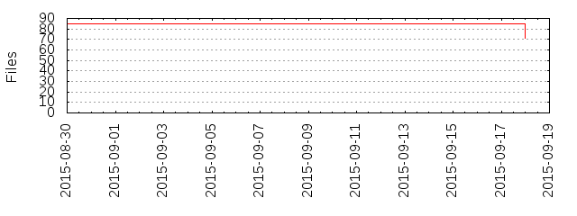

Files
- Total files
- 71
- Total lines
- 3573
- Average file size
- 2174.01 bytes

| Extension | Files (%) | Lines (%) | Lines/file |
|---|
| 7 (9.86%) | 100 (2.80%) | 14 |
| h | 4 (5.63%) | 24 (0.67%) | 6 |
| json | 2 (2.82%) | 75 (2.10%) | 37 |
| lock | 2 (2.82%) | 68 (1.90%) | 34 |
| m | 4 (5.63%) | 20 (0.56%) | 5 |
| markdown | 2 (2.82%) | 98 (2.74%) | 49 |
| md | 2 (2.82%) | 77 (2.16%) | 38 |
| modulemap | 4 (5.63%) | 24 (0.67%) | 6 |
| pbxproj | 2 (2.82%) | 1585 (44.36%) | 792 |
| pch | 2 (2.82%) | 8 (0.22%) | 4 |
| plist | 8 (11.27%) | 333 (9.32%) | 41 |
| podspec | 1 (1.41%) | 44 (1.23%) | 44 |
| sh | 4 (5.63%) | 372 (10.41%) | 93 |
| storyboard | 1 (1.41%) | 27 (0.76%) | 27 |
| swift | 15 (21.13%) | 440 (12.31%) | 29 |
| xcconfig | 6 (8.45%) | 33 (0.92%) | 5 |
| xcodeproj | 1 (1.41%) | 0 (0.00%) | 0 |
| xcscheme | 2 (2.82%) | 175 (4.90%) | 87 |
| xib | 1 (1.41%) | 41 (1.15%) | 41 |
| yml | 1 (1.41%) | 15 (0.42%) | 15 |